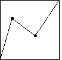

| Because the conversion to trading time is such a powerful tool for unpacking
complicated features of time series, we consider another example, the
generator with turning points (0.2, 0.7) and
(0.6, 0.4). |
|  |
|
| Summary: |
| For large dY in small dt, stretch the time scale for dT - a lot of trading time in a little clock time. |
| For small dY in large dt, compress the time scale for dT - a little trading time in a lot of clock time. |
| The trading time conversion removes long tails by changing the time scale, and keeps the
dependence of increments. |
|